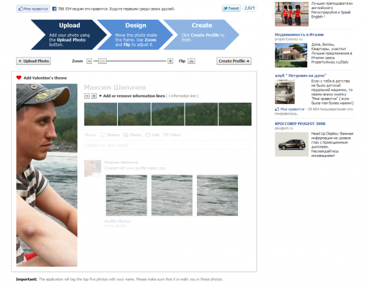
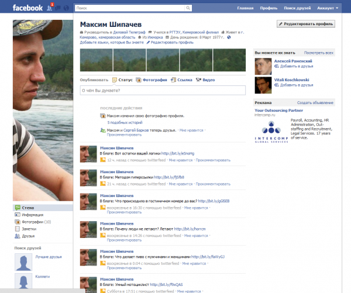

Когда коту нечего делать он себя развлекает как может. Я от кота недалеко наверное в развитии ушёл, разве что пытаюсь соблюдать нормы приличия.
Как-то месяца три назад пробовал помоднее сделать профиль в фейсбуке, но что-то не срослось. Сегодня решил попробовать еще раз.
Очень хотелось сделать всё своими руками, но с нарезкой фотки в фотошопе к сожалению ничего не вышло. Фейсбук выводил превьюшки с разным масштабированием, да и при не давал загружать фотки 98х68 пикселей по размеру этих самых превьюшек. Приходилось увеличивать их в два раза, но рандомное масштабирование всё равно сводило усилия на нет.
Пришлось сойти с тропинки самурая и обратиться к специально созданному для этого приложению. Их на самом деле несколько. Одно из них так и называется Profile Maker. Работать с ним проще чем с авторучкой.
Переходим по ссылке, разрешаем доступ к личной информации, загружаем изображение, масштабируем его, позиционируем, жмём ОК.

Потом еще пара нюансов и вуаля.

Для тех с кем я знаком, ссылка на профиль в фейсбуке.